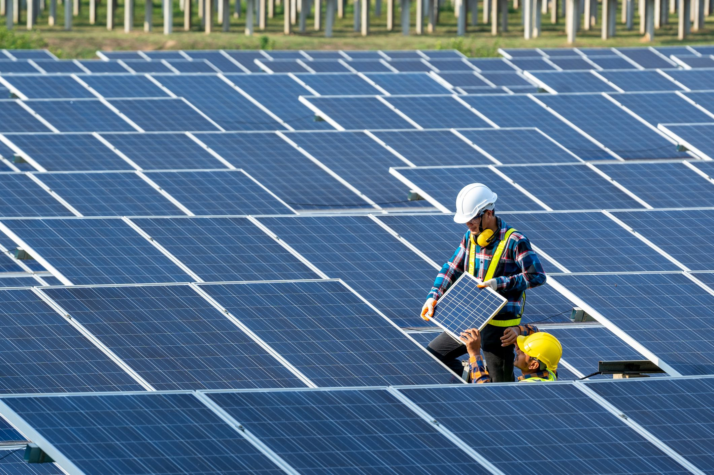

our recent posts

The Nature Conservancys Plant a Billion Trees campaign is a major forest restoration program. Our goal is to restore and protect forests across the planet to slow the connected crises of climate change and biodiversity loss. Help us reach our goal and donate to plant trees today!

The biosphere is dependent on the metabolism, death, and recycling of plants, especially trees. Their vast trunks and root systems store carbon dioxide, move water, and produce oxygen that is released into the atmosphere.
Water is crucial for all known life, acting as a medium for organic compounds to mix, facilitating the formation of Earth's first life forms, and playing a critical role in the survival of complex organisms.
volunteers
trees planted
animals saved
donators
Plants are multicellular organisms and they make food through the process of photosynthesis. There are more than three lakh known species of plants, and the common ones are trees, grasses, and shrubs.
read more>>The basic phases in recycling are the collection of waste materials, their processing or manufacture into new products, and the purchase of those products, which may then themselves be recycled.
read more>>Water conservation aims to sustainably manage the natural resource of fresh water, protect the hydrosphere, and meet current and future human demand.
read more>>Trees provide so many benefits to our everyday lives. They filter clean air, provide fresh drinking water, help curb climate change, and create homes for thousands of species of plants and animals.
read more>>Wildlife on planet Earth is under siege from all sides, facing down habitat loss and the impact of climate change. Some of the biggest threats to wildlife include illegal wildlife trade, habitat destruction, invasive species, pollution, and clime change.
read more>>it reducing greenhouse gases to conserving water resources, solar panels are playing a crucial role in mitigating our environmental impact. We find that solar panels alone induce regional cooling by converting incoming solar energy to electricity in comparison to the climate without solar panels.
read more>>